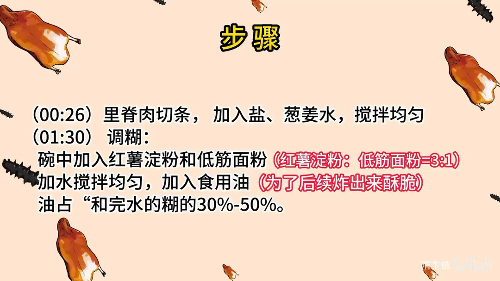
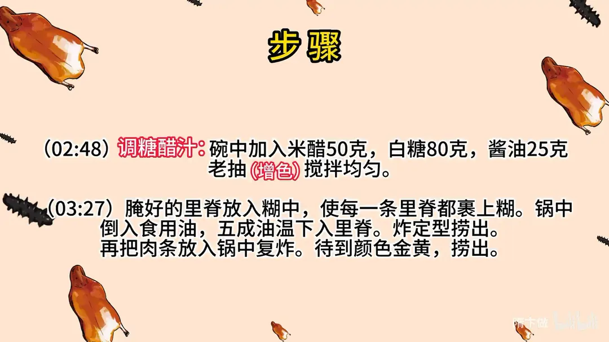
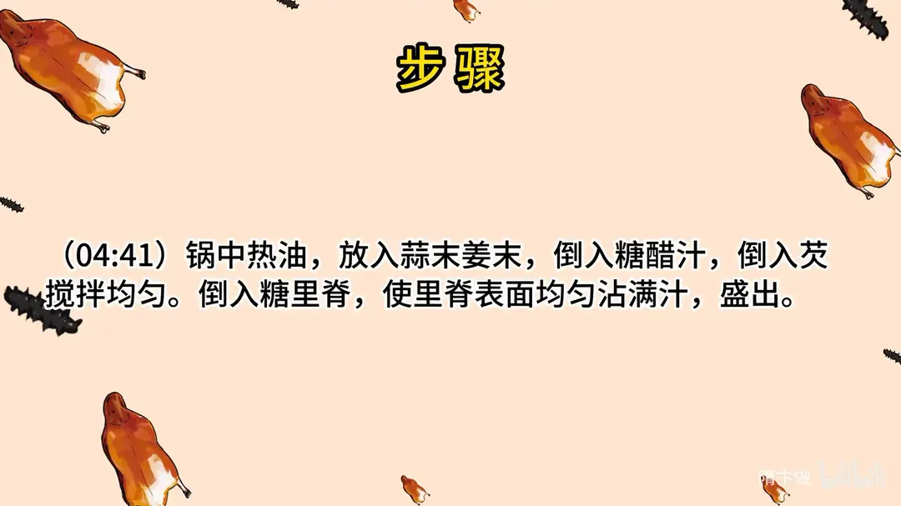

糖醋里脊
隋卞一做。里脊切条只用盐和葱姜水腌，红薯淀粉与低筋面粉按 3:1 调糊、加油炸出酥脆，糖醋汁用 50g 米醋、80g 白糖，复炸后裹汁出锅。
原视频：https://www.bilibili.com/video/BV1qh4y1t7HC
食材
里脊肉、盐、葱姜水 等 11 样
| 类别 | 用料 | 用量 |
|---|---|---|
| 主料 | 里脊肉 | 适量 |
| 腌制 | 盐 | 适量 |
| 腌制 | 葱姜水 | 适量 |
| 调糊 | 红薯淀粉 | 适量（与低筋面粉 3:1） |
| 调糊 | 低筋面粉 | 适量 |
| 调糊 | 食用油 | 占糊的 30%-50% |
| 调汁 | 米醋 | 50g |
| 调汁 | 白糖 | 80g |
| 调汁 | 酱油（老抽增色） | 25g |
| 收汁 | 蒜末 | 适量 |
| 收汁 | 姜末 | 适量 |
步骤
- 切条腌制：里脊肉切条，加入盐、葱姜水，搅拌均匀。
- 调糊：碗中加入红薯淀粉和低筋面粉，红薯淀粉与低筋面粉的比例是 3:1，加水搅拌均匀；再加入食用油，为了后续炸出来酥脆，油占和完水的糊的 30%-50%。
- 调糖醋汁：碗中加入 50g 米醋、80g 白糖、25g 酱油，用老抽增色，搅拌均匀。
- 挂糊：腌好的里脊放入糊中，使每一条里脊都裹上糊。
- 炸制：锅中倒入食用油，五成油温下入里脊，炸定型后捞出；再把肉条放入锅中复炸，待到颜色金黄，捞出。
- 裹汁出锅：锅中热油，放入蒜末姜末，倒入糖醋汁，勾芡搅拌均匀；倒入炸好的里脊，使里脊表面均匀沾满汁，盛出。
讲解要点
难度：★★★☆☆（两个坎：糊的配比要比例对、糖醋汁的糖醋比要拿准）
为什么这么做
- 盐按一斤肉 2g、葱姜水只化开盐就够：底味有了、腥也压住了；水加多了炸的时候会往外吐，糊就崩了。
- 红薯淀粉配低筋面粉 3:1：纯淀粉筋性低、不成型，从肉上挂不住；加点面粉糊才有黏度，能均匀挂在每一根里脊上。
- 糊里加油占到 30%-50%：油就是酥脆的关键，不加只能挂上糊、炸不酥；超过 50% 糊会变稀、失去黏性，所以以 30% 左右最稳。
- 里脊打花刀：划开便于入味，也能让糊吃得更牢。
- 五成油温下锅、定型后转中小火多炸一会儿：先定型不脱糊，再慢慢把水分耗掉，表面才有那种小泡沫一样的酥壳。
- 复炸一次：第二遍高温把表面的水分再逼出去，出来才够脆。
- 米醋配白糖（50g 比 80g）、点老抽只为颜色：这个比例酸甜比例合适，不会一入口就「呛」；老抽只上色不改味。
- 勾芡后下里脊，趁热裹汁：汁挂在热里脊上才亮、才不软，凉了再裹就粘连。
- 蒜末姜末先炒香：糖醋汁直接倒进去会太单调，蒜姜是底香。
容易翻车
- 糊里加了面粉却忘了加油，炸出来是硬的而不是酥的。
- 腌制水加多、油温又低，下锅就脱糊、糊塌在油里。
- 糖醋汁糖醋比例偏了（这次醋少糖多），味道「飘」、不立体。
- 里脊凉了再挂汁，外壳回软、汁水吸不进去。
- 面糊厚度看着只有肉的两层薄薄一层就够了，太厚反而发硬、吃出面粉味。
热评补充
- 油占糊的 30%-50% 是这个糊酥脆的核心，市面上不少做法靠加泡打粉硬膨出来，口感完全不同——想炸得酥脆，照着这个油量放、油必须够、火候时间也必须够。
原片尾卡



原片文案
AI 字幕校准稿
答应你们的，也是好多人都在问的糖醋里脊。这个菜现在热度比较高，不只是希望你们学会这一个菜，糖醋里脊有两个不好掌握的点：第一个就是它那个糊，第二个就是那个糖醋汁的糖醋口味不太好拿。今天争取这一条视频给大家伙都讲清楚，你们呢以后可以举一反三，类似的菜都可以这么做。
这个正经的猪里脊，骗一刀，下面一层很薄的筋膜呢可以给它片出来，上面打点花刀，便于入味。糖醋里脊其实主要要求的就是一个糖醋味儿。
你们不要再给我发私信问这个正宗不正宗了，除了一些传统菜，大部分菜说正宗都没有什么太大的意义，只要是食客们爱吃，那就是真好。
切好的里脊肉里加点盐，一斤肉是 2 克盐，加葱姜水。这里边加水也不能加太多，只是让他把那个盐化掉，如果太多了，一会儿炸的时候它会往外吐，咱们那个糊就挂不住了。
今天教你们调糊了，我用的是红薯淀粉、低筋面粉，三比一搅匀。跟你们说一下为什么要加面粉：这个淀粉筋性特别的低，粘性特别的低，它不成型，从肉上挂着也特别不好挂；加完面粉之后，这个糊的粘稠度就特别的合适了。
为了让你们看得更直观一点，我再给你调一个不加面粉的对比一下。淀粉里加上水，你们看这个是加过面粉的，非常的丝滑；再看这个没加面粉的，抓起来都很费劲，疙瘩啰嗦，很直观。
还有一个关键点：这个糊我们弄完之后，它只是特别听话，很容易挂在肉上面，但是要让它酥脆，必须得加油。我经过反复地实验得出一个结论，大部分都是 30% 左右，最高不能超过 50%。你看现在又不一样了，就像牛奶一样。挂糊呢可能各家有各家的做法，但是我们教学还是以大家不容易出错为主。做抓炒啊、糖醋鱼啊，这几种菜用这个糊了，基本不会出错。
然后就是第二个关键，糖醋汁。你们经常看我们这探菜视频，说这个糖醋味味道特别的飘，为什么飘，一会儿我告诉你。首先要醋，用米醋；然后是白糖；点一点老抽，这只不过是增加个色。这个比例给你们放在视频结尾了，你们不用记，看好咱们的操作步骤就可以了。
腌好的里脊放到这个糊里边抓匀，让每一根里脊上面都挂满糊就行了。五成油温下，你看咱们这下去这糊完全没有掉，所以为什么要加面粉呢，它就能起到这种作用。下去之后表面定型了，关中小火让它多炸一会儿，表面会更酥脆。一根根粘上的问题不大，多炸一会儿它就自然而然地散开了，一抖了就散了。
定型了捞出来，再把肉复炸一下，炸那种酥脆的感觉。锅里边这个水泡不是特别多了、颜色已经是金黄色了，就可以捞了。
你们看炸好的里脊表面的糊，那种小泡沫的形状一样，油加进去之后才能达到这个效果。这种状态炸完了糊，它不可能不酥，决定性作用就是面粉。你们看糊的周围是很均匀的，两层糊加一块都达不到肉的 50% 的厚度，虽然它很薄，但是它的脆度是够的。
锅里边搁蒜末姜末，把糖醋汁在锅里边搅匀，勾芡，加入淀粉之后，大火倒入炸好的里脊翻炒。
快点快点，装盘吃饭了。糖醋里脊。你们看拍了那么久才这么酥脆的，这就是糊：一是按照比例放，第二是油必须够，第三炸的火候时间要够。再有一个，挂汁的时候一定是里脊特别热的时候倒进去。老式的这个味也特别对，它是醋的那种香味，但是它就没有那种呛，它是盐、糖、醋三个比例还是比较合适的。拿不准的话就是飘。
祝大家有个好菜，大家举一反三，一定会演变好。拜拜。